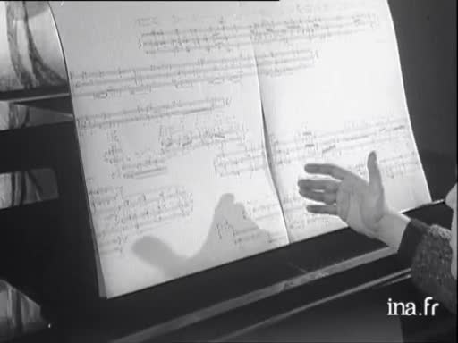

1967 - Pierre Boulez pédagogue de son travail

<img width="1" height="1" alt="" src="https://logs1242.xiti.com/hit.xiti?s=513311&s2=12&p=player::iframeEmbed::I08263962-pierre-boulez-p-dagogue-de-son-travail&di=&an=&ac=" >